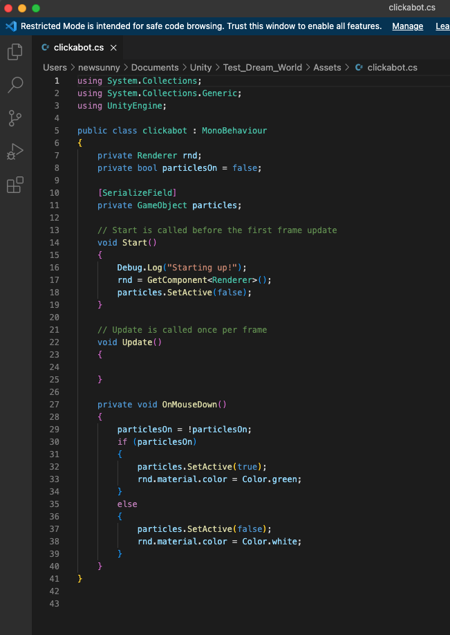
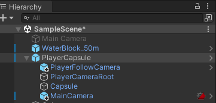
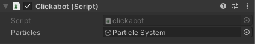

Dream World in Unity I want to create a Unity world with a beautiful lake landscape and fireworks that
launch from the water. The scene should be visually impressive and immersive.
Additionally, I plan to add a button function so that users can turn
the fireworks on and off at their discretion. Unity

The script for an interactive cube involves a mechanism that changes
the cube's color from white to green when the player clicks on it.
This color change indicates that the cube is now activated,
and the fireworks or particles will begin playing.

To use the first-person controller in Unity,
I import the asset and then drag both the main
and following cameras beneath the capsule. This setup allows the cameras
to follow the movements of the capsule and create a first-person perspective for the player.

To ensure proper particle settings for the cube button in Unity,
I drag the particles that you wish to play onto the cube.
This action will assign the chosen particles to the cube and enable
them to play when the button is activated. This video represents my final product demonstrating how to interact with the cube and showcase its effects in Unity.